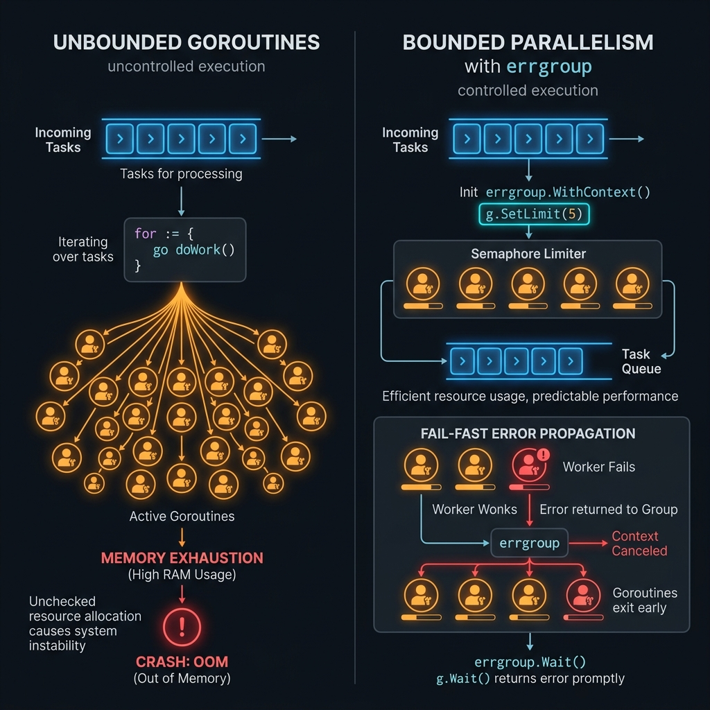

Bounded Parallelism
với errgroup
★ Expert
Kiểm soát số lượng goroutine chạy đồng thời bằng cách kết hợp errgroup với SetLimit(), ngăn chặn resource exhaustion, quản lý lỗi tập trung, và tự động hủy toàn bộ pipeline khi có lỗi xảy ra.
1. Vấn đề — Tại sao cần Bounded Parallelism?
Khi xử lý hàng nghìn task song song không giới hạn, hệ thống sẽ gặp các vấn đề nghiêm trọng:

Quy tắc vàng: Số goroutine đồng thời tối ưu thường bằng runtime.NumCPU() * 2 cho CPU-bound tasks,
hoặc 10–100 cho I/O-bound tasks (network, database, disk).
2. errgroup Package — Tổng quan
golang.org/x/sync/errgroup cung cấp synchronization, error propagation, và context cancellation
cho nhóm goroutines chạy cùng nhau.
| Method / Field | Mô tả | Ghi chú |
|---|---|---|
errgroup.WithContext(ctx) | Tạo Group mới kèm context có thể cancel | Context bị cancel khi có goroutine trả về lỗi |
g.Go(func() error) | Spawn goroutine, track lỗi tự động | Goroutine phải return error hoặc nil |
g.Wait() | Đợi tất cả goroutines hoàn thành | Trả về lỗi đầu tiên (nếu có) |
g.SetLimit(n) | Giới hạn số goroutines đồng thời tối đa | Go 1.20+ · Core của Bounded Parallelism |
g.TryGo(func() error) | Spawn goroutine nếu chưa đạt limit | Trả về false nếu đã đầy, không block |
3. Cơ bản — Semaphore Channel (Trước khi có errgroup)
Trước Go 1.20, cách phổ biến nhất để bounded parallelism là dùng buffered channel làm semaphore:
// Pattern cổ điển: dùng buffered channel làm semaphore package main import ( "context" "fmt" "sync" "time" ) // Semaphore giới hạn số goroutine chạy đồng thời type Semaphore chan struct{} func NewSemaphore(n int) Semaphore { return make(chan struct{}, n) } // Acquire: block nếu đã đạt giới hạn func (s Semaphore) Acquire(ctx context.Context) error { select { case s <- struct{}{}: return nil case <-ctx.Done(): return ctx.Err() // context cancelled/timeout } } // Release: giải phóng 1 slot func (s Semaphore) Release() { <-s } func main() { ctx, cancel := context.WithTimeout(context.Background(), 10*time.Second) defer cancel() tasks := make([]int, 20) for i := range tasks { tasks[i] = i } sem := NewSemaphore(5) // Tối đa 5 goroutines đồng thời var wg sync.WaitGroup results := make([]string, len(tasks)) for i, task := range tasks { i, task := i, task // capture loop vars (Go 1.21 không cần) // Acquire trước khi spawn goroutine if err := sem.Acquire(ctx); err != nil { fmt.Printf("context cancelled: %v\n", err) break } wg.Add(1) go func() { defer wg.Done() defer sem.Release() // LUÔN release khi goroutine kết thúc time.Sleep(100 * time.Millisecond) // simulate work results[i] = fmt.Sprintf("task %d done", task) }() } wg.Wait() fmt.Println("All tasks completed:", results[0], "...") }
Nhược điểm: Pattern này không tự động propagate errors. Phải tự quản lý sync.WaitGroup, mutex, và error collection — dễ dẫn đến race condition và boilerplate code.
4. errgroup.SetLimit() — Modern Solution
Từ Go 1.20, errgroup.SetLimit(n) là cách chính thức và sạch nhất để implement Bounded Parallelism:
package main import ( "context" "fmt" "net/http" "time" "golang.org/x/sync/errgroup" ) func fetchURLs(ctx context.Context, urls []string) ([]string, error) { // 1. Tạo errgroup với context g, ctx := errgroup.WithContext(ctx) // 2. ⭐ Giới hạn tối đa 10 goroutines đồng thời g.SetLimit(10) results := make([]string, len(urls)) for i, url := range urls { i, url := i, url // 3. g.Go() sẽ BLOCK nếu đã có 10 goroutines đang chạy // Tự động tiếp tục khi có goroutine kết thúc (giải phóng slot) g.Go(func() error { req, err := http.NewRequestWithContext(ctx, http.MethodGet, url, nil) if err != nil { return fmt.Errorf("tạo request [%s]: %w", url, err) } resp, err := http.DefaultClient.Do(req) if err != nil { return fmt.Errorf("fetch [%s]: %w", url, err) } defer resp.Body.Close() results[i] = fmt.Sprintf("%s → %d", url, resp.StatusCode) return nil }) } // 4. Đợi TẤT CẢ goroutines hoàn thành // Nếu bất kỳ goroutine nào return error → context bị cancel // → các goroutines khác nhận ctx.Done() và dừng lại if err := g.Wait(); err != nil { return nil, err } return results, nil } func main() { ctx, cancel := context.WithTimeout(context.Background(), 30*time.Second) defer cancel() urls := []string{ "https://httpbin.org/get", "https://httpbin.org/delay/1", "https://httpbin.org/status/200", // ... 1000 URLs } results, err := fetchURLs(ctx, urls) if err != nil { fmt.Printf("Lỗi: %v\n", err) return } fmt.Printf("Hoàn thành %d requests\n", len(results)) }
✅ Lợi ích của SetLimit()
- Không cần tự quản lý semaphore
- Error tự động cancel context
- Code ngắn gọn, dễ đọc
- Thread-safe built-in
- Tích hợp với context deadline
❌ Khi nào KHÔNG dùng SetLimit()
- Cần collect TẤT CẢ errors (không chỉ first error)
- Không muốn cancel khi có lỗi
- Cần dynamic limit thay đổi runtime
- Cần priority queue cho tasks
5. Nâng cao — Worker Pool + errgroup
Kết hợp Worker Pool pattern với errgroup để xử lý stream tasks từ channel với bounded concurrency:
package pool import ( "context" "fmt" "golang.org/x/sync/errgroup" ) // Task định nghĩa một đơn vị công việc type Task[T any] struct { ID int Payload T } // Result chứa kết quả hoặc lỗi của một task type Result[T any] struct { TaskID int Value T Err error } // BoundedPool xử lý tasks với số goroutines giới hạn type BoundedPool[In, Out any] struct { maxWorkers int processor func(context.Context, Task[In]) (Out, error) } func NewBoundedPool[In, Out any]( maxWorkers int, processor func(context.Context, Task[In]) (Out, error), ) *BoundedPool[In, Out] { if maxWorkers <= 0 { maxWorkers = 10 // default } return &BoundedPool[In, Out]{ maxWorkers: maxWorkers, processor: processor, } } // Process nhận tasks từ channel, xử lý với bounded concurrency func (p *BoundedPool[In, Out]) Process( ctx context.Context, tasks <-chan Task[In], ) (<-chan Result[Out], <-chan error) { results := make(chan Result[Out], p.maxWorkers*2) errCh := make(chan error, 1) go func() { defer close(results) defer close(errCh) g, gctx := errgroup.WithContext(ctx) g.SetLimit(p.maxWorkers) // ⭐ Bounded here for task := range tasks { task := task // capture (Go < 1.22) g.Go(func() error { // Kiểm tra context trước khi xử lý select { case <-gctx.Done(): return gctx.Err() default: } val, err := p.processor(gctx, task) results <- Result[Out]{ TaskID: task.ID, Value: val, Err: err, } return nil // không propagate lỗi lên errgroup // để tiếp tục xử lý task còn lại }) } if err := g.Wait(); err != nil { errCh <- err } }() return results, errCh } // --- USAGE EXAMPLE --- func ExampleUsage() { ctx := context.Background() // Tạo pool với 5 workers, xử lý int → string pool := NewBoundedPool[int, string](5, func(ctx context.Context, t Task[int]) (string, error) { return fmt.Sprintf("processed-%d", t.Payload), nil }) tasks := make(chan Task[int], 100) go func() { defer close(tasks) for i := range 100 { tasks <- Task[int]{ID: i, Payload: i * 2} } }() results, errCh := pool.Process(ctx, tasks) for r := range results { if r.Err != nil { fmt.Printf("Task %d failed: %v\n", r.TaskID, r.Err) continue } fmt.Printf("Task %d: %s\n", r.TaskID, r.Value) } if err := <-errCh; err != nil { fmt.Printf("Pool error: %v\n", err) } }
6. Nâng cao — Dynamic Concurrency Limit
Điều chỉnh số lượng goroutines tối đa theo load của hệ thống trong runtime:
package adaptive import ( "context" "runtime" "sync" "sync/atomic" "time" "golang.org/x/sync/errgroup" ) // AdaptivePool tự điều chỉnh số workers dựa trên system load type AdaptivePool struct { minWorkers int maxWorkers int currentLimit atomic.Int64 mu sync.RWMutex memThreshold uint64 // bytes } func NewAdaptivePool(min, max int, memThresholdMB uint64) *AdaptivePool { p := &AdaptivePool{ minWorkers: min, maxWorkers: max, memThreshold: memThresholdMB * 1024 * 1024, } p.currentLimit.Store(int64(max)) return p } // adaptLimit điều chỉnh limit dựa trên memory usage func (p *AdaptivePool) adaptLimit() int { var ms runtime.MemStats runtime.ReadMemStats(&ms) usage := float64(ms.Alloc) / float64(p.memThreshold) switch { case usage > 0.9: // Nguy hiểm: giảm mạnh return p.minWorkers case usage > 0.7: // Cảnh báo: giảm vừa return (p.minWorkers + p.maxWorkers) / 2 default: // Bình thường: dùng tối đa return p.maxWorkers } } // Run chạy tasks với dynamic limit, monitor mỗi 5 giây func (p *AdaptivePool) Run(ctx context.Context, tasks []func() error) error { // Goroutine monitor điều chỉnh limit định kỳ monitorCtx, stopMonitor := context.WithCancel(ctx) defer stopMonitor() go func() { ticker := time.NewTicker(5 * time.Second) defer ticker.Stop() for { select { case <-monitorCtx.Done(): return case <-ticker.C: newLimit := p.adaptLimit() p.currentLimit.Store(int64(newLimit)) } } }() g, ctx := errgroup.WithContext(ctx) g.SetLimit(p.maxWorkers) // set max, dynamic via monitor for _, task := range tasks { task := task g.Go(func() error { select { case <-ctx.Done(): return ctx.Err() default: return task() } }) } return g.Wait() }
7. Nâng cao — Backpressure với errgroup
package pipeline import ( "context" "fmt" "time" "golang.org/x/sync/errgroup" ) type Record struct { ID int Data string } // PipelineWithBackpressure: producer → bounded workers → sink func PipelineWithBackpressure(ctx context.Context, workerCount int) error { g, ctx := errgroup.WithContext(ctx) // Channel có buffer = workerCount tạo backpressure tự nhiên: // Producer bị block khi channel đầy → không tạo quá nhiều tasks taskCh := make(chan Record, workerCount) // Stage 1: Producer — gửi tasks vào channel g.Go(func() error { defer close(taskCh) // QUAN TRỌNG: đóng channel khi xong for i := range 1000 { record := Record{ID: i, Data: fmt.Sprintf("record-%d", i)} select { case taskCh <- record: // gửi thành công case <-ctx.Done(): return ctx.Err() // dừng nếu context cancelled } } return nil }) // Stage 2: Workers — xử lý với bounded parallelism g.SetLimit(workerCount + 1) // +1 cho producer goroutine for w := range workerCount { w := w g.Go(func() error { for record := range taskCh { // tự dừng khi channel đóng if err := processRecord(ctx, record); err != nil { return fmt.Errorf("worker %d, record %d: %w", w, record.ID, err) } } return nil }) } return g.Wait() // đợi producer + tất cả workers } func processRecord(ctx context.Context, r Record) error { select { case <-ctx.Done(): return ctx.Err() case <-time.After(10 * time.Millisecond): // simulate processing return nil } }
8. Expert — HTTP Crawler với Rate Limiting
package crawler import ( "context" "fmt" "io" "net/http" "sync" "time" "golang.org/x/sync/errgroup" "golang.org/x/time/rate" ) // CrawlResult chứa kết quả crawl một URL type CrawlResult struct { URL string StatusCode int BodySize int64 Duration time.Duration Err error } // Crawler với bounded parallelism + rate limiting type Crawler struct { maxConcurrent int limiter *rate.Limiter // request/second client *http.Client maxRetries int mu sync.Mutex visited map[string]bool } func NewCrawler(maxConcurrent, rps, maxRetries int) *Crawler { return &Crawler{ maxConcurrent: maxConcurrent, limiter: rate.NewLimiter(rate.Limit(rps), rps), client: &http.Client{ Timeout: 15 * time.Second, Transport: &http.Transport{ MaxIdleConnsPerHost: maxConcurrent, IdleConnTimeout: 30 * time.Second, }, }, maxRetries: maxRetries, visited: make(map[string]bool), } } // CrawlAll crawl nhiều URLs đồng thời với bounded concurrency func (c *Crawler) CrawlAll(ctx context.Context, urls []string) ([]CrawlResult, error) { g, ctx := errgroup.WithContext(ctx) g.SetLimit(c.maxConcurrent) results := make([]CrawlResult, len(urls)) for i, url := range urls { i, url := i, url // Dedup: bỏ qua URL đã crawl c.mu.Lock() if c.visited[url] { c.mu.Unlock() continue } c.visited[url] = true c.mu.Unlock() g.Go(func() error { // Rate limiting: tuân thủ giới hạn request/giây if err := c.limiter.Wait(ctx); err != nil { return nil // context cancelled, không phải lỗi nghiêm trọng } result := c.crawlWithRetry(ctx, url) results[i] = result // Chỉ return error cho lỗi nghiêm trọng if result.Err != nil && isFatalError(result.Err) { return result.Err } return nil }) } if err := g.Wait(); err != nil { return results, err } return results, nil } // crawlWithRetry thực hiện crawl với exponential backoff retry func (c *Crawler) crawlWithRetry(ctx context.Context, url string) CrawlResult { var lastErr error for attempt := range c.maxRetries { if attempt > 0 { // Exponential backoff: 1s, 2s, 4s... backoff := time.Duration(1<<attempt) * time.Second select { case <-time.After(backoff): case <-ctx.Done(): return CrawlResult{URL: url, Err: ctx.Err()} } } result := c.crawlOnce(ctx, url) if result.Err == nil { return result // thành công } lastErr = result.Err // Không retry nếu lỗi client (4xx) if result.StatusCode >= 400 && result.StatusCode < 500 { break } } return CrawlResult{URL: url, Err: fmt.Errorf("sau %d lần thử: %w", c.maxRetries, lastErr)} } func (c *Crawler) crawlOnce(ctx context.Context, url string) CrawlResult { start := time.Now() req, err := http.NewRequestWithContext(ctx, http.MethodGet, url, nil) if err != nil { return CrawlResult{URL: url, Err: err} } req.Header.Set("User-Agent", "GoBot/1.0") resp, err := c.client.Do(req) if err != nil { return CrawlResult{URL: url, Err: err, Duration: time.Since(start)} } defer resp.Body.Close() n, _ := io.Copy(io.Discard, resp.Body) return CrawlResult{ URL: url, StatusCode: resp.StatusCode, BodySize: n, Duration: time.Since(start), } } func isFatalError(err error) bool { // Chỉ fatal nếu là lỗi auth hoặc forbidden return false // tùy business logic } // --- MAIN USAGE --- func ExampleCrawler() { ctx, cancel := context.WithTimeout(context.Background(), 60*time.Second) defer cancel() crawler := NewCrawler( 20, // max 20 concurrent requests 10, // max 10 requests/second 3, // retry tối đa 3 lần ) urls := []string{ "https://example.com/page/1", "https://example.com/page/2", // ... 10000 URLs } results, err := crawler.CrawlAll(ctx, urls) if err != nil { fmt.Printf("Fatal error: %v\n", err) } var success, failed int for _, r := range results { if r.Err != nil { failed++ } else { success++ } } fmt.Printf("Thành công: %d, Thất bại: %d\n", success, failed) }
9. Expert — ETL Pipeline hoàn chỉnh
package etl import ( "context" "database/sql" "fmt" "log/slog" "sync" "time" "golang.org/x/sync/errgroup" ) type Record struct { ID string Source string RawData []byte Processed bool } type ETLConfig struct { ExtractWorkers int // Số goroutines đọc dữ liệu TransformWorkers int // Số goroutines transform LoadWorkers int // Số goroutines ghi DB BatchSize int // Số records mỗi batch DLQBufferSize int // Dead Letter Queue buffer } func DefaultConfig() ETLConfig { return ETLConfig{ ExtractWorkers: 3, TransformWorkers: 10, LoadWorkers: 5, BatchSize: 1000, DLQBufferSize: 10000, } } type ETLPipeline struct { config ETLConfig db *sql.DB logger *slog.Logger dlq chan FailedRecord } type FailedRecord struct { Record Record Err error Stage string RetryCount int } func NewETLPipeline(cfg ETLConfig, db *sql.DB) *ETLPipeline { return &ETLPipeline{ config: cfg, db: db, logger: slog.Default(), dlq: make(chan FailedRecord, cfg.DLQBufferSize), } } // Run chạy toàn bộ ETL pipeline func (p *ETLPipeline) Run(ctx context.Context, sources []DataSource) error { g, ctx := errgroup.WithContext(ctx) // --- STAGE 1: EXTRACT --- rawCh := make(chan Record, p.config.ExtractWorkers*2) g.Go(func() error { defer close(rawCh) eg, egCtx := errgroup.WithContext(ctx) eg.SetLimit(p.config.ExtractWorkers) // ⭐ Bounded Extract for _, src := range sources { src := src eg.Go(func() error { return src.Extract(egCtx, rawCh) }) } return eg.Wait() }) // --- STAGE 2: TRANSFORM --- transformedCh := make(chan Record, p.config.TransformWorkers*2) g.Go(func() error { defer close(transformedCh) tg, tCtx := errgroup.WithContext(ctx) tg.SetLimit(p.config.TransformWorkers) // ⭐ Bounded Transform for record := range rawCh { record := record tg.Go(func() error { transformed, err := p.transform(tCtx, record) if err != nil { // Lỗi nhỏ → DLQ, không dừng pipeline p.sendToDLQ(FailedRecord{Record: record, Err: err, Stage: "transform"}) return nil } select { case transformedCh <- transformed: case <-tCtx.Done(): return tCtx.Err() } return nil }) } return tg.Wait() }) // --- STAGE 3: LOAD (Batch + Bounded) --- g.Go(func() error { return p.batchLoad(ctx, transformedCh) }) // --- DLQ CONSUMER --- g.Go(func() error { return p.consumeDLQ(ctx) }) return g.Wait() } // batchLoad thu thập records thành batch rồi insert vào DB func (p *ETLPipeline) batchLoad(ctx context.Context, in <-chan Record) error { lg, lCtx := errgroup.WithContext(ctx) lg.SetLimit(p.config.LoadWorkers) // ⭐ Bounded Load batch := make([]Record, 0, p.config.BatchSize) var mu sync.Mutex flushBatch := func(b []Record) { b2 := make([]Record, len(b)) copy(b2, b) lg.Go(func() error { if err := p.bulkInsert(lCtx, b2); err != nil { // Retry từng record đơn lẻ for _, r := range b2 { p.sendToDLQ(FailedRecord{Record: r, Err: err, Stage: "load"}) } } return nil }) } for record := range in { mu.Lock() batch = append(batch, record) if len(batch) >= p.config.BatchSize { flushBatch(batch) batch = batch[:0] } mu.Unlock() } // Flush batch cuối if len(batch) > 0 { flushBatch(batch) } return lg.Wait() } func (p *ETLPipeline) sendToDLQ(f FailedRecord) { select { case p.dlq <- f: default: p.logger.Error("DLQ full, dropping record", "id", f.Record.ID) } } func (p *ETLPipeline) consumeDLQ(ctx context.Context) error { for { select { case <-ctx.Done(): return nil case f, ok := <-p.dlq: if !ok { return nil } p.logger.Warn("dead letter", "id", f.Record.ID, "stage", f.Stage, "err", f.Err, ) } } } func (p *ETLPipeline) transform(ctx context.Context, r Record) (Record, error) { // validate, normalize, enrich... r.Processed = true return r, nil } func (p *ETLPipeline) bulkInsert(ctx context.Context, records []Record) error { // PostgreSQL COPY or batch INSERT _ = records return nil } type DataSource interface { Extract(ctx context.Context, out chan<- Record) error } var _ = fmt.Sprintf var _ = time.Second
10. Expert — Adaptive Throttle Controller
package throttle import ( "context" "sync/atomic" "time" "math" "golang.org/x/sync/errgroup" ) // AdaptiveThrottle implement AIMD (Additive Increase, Multiplicative Decrease) // tương tự TCP congestion control type AdaptiveThrottle struct { minConcurrency int64 maxConcurrency int64 current atomic.Int64 successCount atomic.Int64 errorCount atomic.Int64 totalLatency atomic.Int64 // nanoseconds requestCount atomic.Int64 targetLatency time.Duration errorThreshold float64 // 0.0 - 1.0 adjustInterval time.Duration } func NewAdaptiveThrottle(min, max int64, targetLatency time.Duration) *AdaptiveThrottle { t := &AdaptiveThrottle{ minConcurrency: min, maxConcurrency: max, targetLatency: targetLatency, errorThreshold: 0.05, // 5% error rate → giảm concurrency adjustInterval: 10 * time.Second, } t.current.Store((min + max) / 2) return t } // adjust tính lại limit dựa trên metrics func (t *AdaptiveThrottle) adjust() { total := t.requestCount.Swap(0) errors := t.errorCount.Swap(0) latency := t.totalLatency.Swap(0) t.successCount.Swap(0) if total == 0 { return } errorRate := float64(errors) / float64(total) avgLatency := time.Duration(latency / total) current := t.current.Load() switch { case errorRate > t.errorThreshold || avgLatency > t.targetLatency*2: // Multiplicative Decrease: bị quá tải → giảm mạnh 50% newLimit := int64(math.Max(float64(t.minConcurrency), float64(current)*0.5)) t.current.Store(newLimit) case errorRate < t.errorThreshold/2 && avgLatency < t.targetLatency: // Additive Increase: ổn định → tăng dần +1 newLimit := int64(math.Min(float64(t.maxConcurrency), float64(current)+1)) t.current.Store(newLimit) } } // RecordResult ghi lại kết quả của một request func (t *AdaptiveThrottle) RecordResult(latency time.Duration, err error) { t.requestCount.Add(1) t.totalLatency.Add(int64(latency)) if err != nil { t.errorCount.Add(1) } else { t.successCount.Add(1) } } // Run chạy tasks với adaptive concurrency func (t *AdaptiveThrottle) Run(ctx context.Context, tasks <-chan func(ctx context.Context) error) error { // Goroutine điều chỉnh limit định kỳ adjustCtx, stopAdjust := context.WithCancel(ctx) defer stopAdjust() go func() { ticker := time.NewTicker(t.adjustInterval) defer ticker.Stop() for { select { case <-adjustCtx.Done(): return case <-ticker.C: t.adjust() } } }() g, gCtx := errgroup.WithContext(ctx) g.SetLimit(int(t.maxConcurrency)) for task := range tasks { task := task // Nếu hiện tại dưới limit → spawn, nếu không → TryGo current := int(t.current.Load()) g.SetLimit(current) g.Go(func() error { start := time.Now() err := task(gCtx) t.RecordResult(time.Since(start), err) return nil // không propagate để tiếp tục adaptive }) } return g.Wait() }
11. So sánh hiệu năng
| Pattern | Limit Method | Error Handling | Context Cancel | Code Lines | Use Case |
|---|---|---|---|---|---|
sync.WaitGroup |
Channel semaphore | ❌ Manual | ❌ Manual | ~50 | Simple, no errors |
errgroup (cũ) |
N goroutines fixed | ✅ First error | ✅ Auto | ~30 | Fixed worker count |
errgroup.SetLimit |
SetLimit(n) | ✅ First error | ✅ Auto | ~15 | ⭐ Recommended |
semaphore.Weighted |
Weighted acquire | ❌ Manual | ✅ Context | ~40 | Weighted resources |
| Adaptive Throttle | Dynamic + AIMD | ✅ Tracked | ✅ Auto | ~150 | Production SLA |
12. Lỗi phổ biến & Cách tránh
❌ Lỗi 1: Quên capture loop variable (Go < 1.22)
// ❌ SAI: tất cả goroutines dùng cùng biến url (Go < 1.22) for _, url := range urls { g.Go(func() error { return fetch(url) // url luôn là giá trị CUỐI của vòng lặp! }) } // ✅ ĐÚNG: capture bằng shadow variable (Go < 1.22) for _, url := range urls { url := url // tạo bản sao mới cho mỗi iteration g.Go(func() error { return fetch(url) }) } // ✅ ĐÚNG: Go 1.22+ tự động fix loop variable capture // Không cần shadow variable nữa!
❌ Lỗi 2: SetLimit sau khi đã gọi Go()
// ❌ SAI: panic! SetLimit phải gọi trước g.Go() g, _ := errgroup.WithContext(ctx) g.Go(someTask) // ← gọi Go() trước g.SetLimit(5) // ← PANIC: cannot call SetLimit after Go // ✅ ĐÚNG: SetLimit phải trước tất cả g.Go() g, ctx := errgroup.WithContext(ctx) g.SetLimit(5) // ← SetLimit TRƯỚC for _, task := range tasks { g.Go(task) // ← sau đó mới Go() }
❌ Lỗi 3: Goroutine leak khi không check ctx.Done()
// ❌ SAI: goroutine tiếp tục chạy dù context đã cancel g.Go(func() error { for item := range bigCh { process(item) // không check ctx → leak! } return nil }) // ✅ ĐÚNG: luôn check ctx.Done() trong vòng lặp dài g.Go(func() error { for { select { case <-ctx.Done(): return ctx.Err() // thoát clean case item, ok := <-bigCh: if !ok { return nil } if err := process(ctx, item); err != nil { return err } } } })
Phát hiện goroutine leak: Dùng go test -race ./... và goleak package (go.uber.org/goleak) để tự động detect goroutine leak trong unit tests.
Checklist Production
-
1Chọn đúng limitI/O-bound: 10–100 goroutines. CPU-bound:
runtime.NumCPU(). Benchmark với production traffic. -
2SetLimit trước mọi g.Go()Luôn gọi
g.SetLimit(n)ngay sauerrgroup.WithContext(). -
3Capture loop variables đúng cáchGo 1.22+: tự động. Go cũ:
url := urlshadow variable. -
4Luôn check ctx.Done() trong long tasksDùng
selectvớictx.Done()để không bị goroutine leak. -
5Quyết định error propagation strategyReturn error để cancel tất cả (fast-fail), hoặc log + DLQ để tiếp tục (resilient).
-
6Test với -race flag và goleak
go test -race -count=1 ./...để phát hiện race condition và goroutine leak.
13. Tài liệu tham khảo
Những nguồn chất lượng cao nhất về Bounded Parallelism và errgroup trong Go:
Sách khuyên đọc: Concurrency in Go bởi Katherine Cox-Buday (O'Reilly) — bao gồm đầy đủ về goroutines, channels, select, context, và các patterns production-grade. Đây là tài liệu toàn diện nhất về Go concurrency bằng tiếng Anh.
Go Pipeline Pattern Documentation · Bounded Parallelism với errgroup · Go 1.21+
Được biên soạn theo Go Community Best Practices · golang.org/x/sync v0.13.0